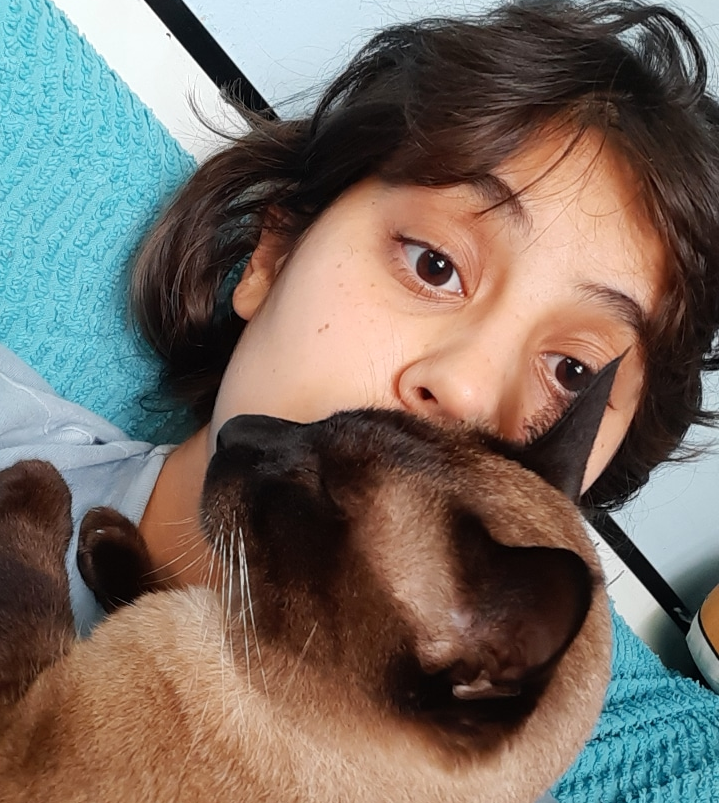

<mat-toolbar >
  <button mat-icon-button>
    <mat-icon>menu</mat-icon>
  </button>
  <span>Rinava's Web <mat-icon>favorite</mat-icon> </span>
</mat-toolbar>
<div class="container">
    <div class="background-wrapper">
        
    </div>
    <div class="profile-wrapper">
        
    </div>
   <h1 class="title"> My personal WebSite</h1>
</div>